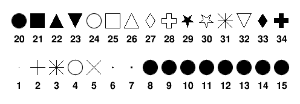
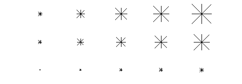
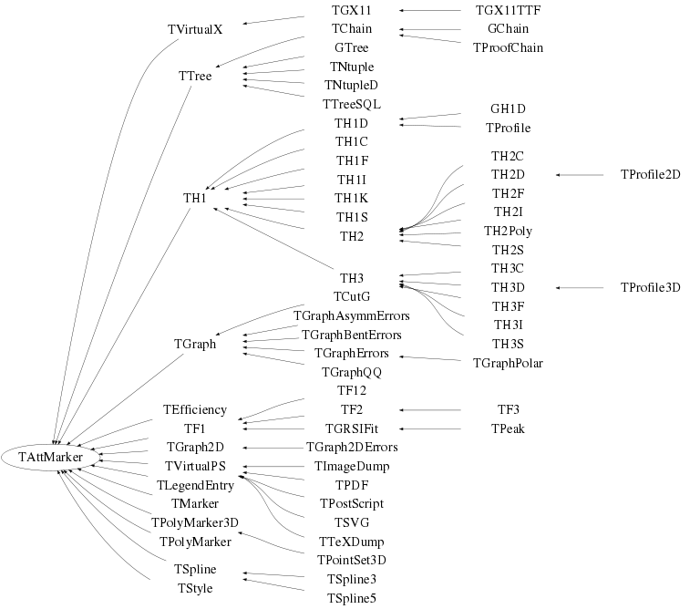

class TAttMarker
Marker Attributes class
Marker attributes
The marker attributes are:Marker color
The marker color is a color index (integer) pointing in the ROOT color table. The marker color of any class inheriting from TAttMarker can be changed using the method SetMarkerColor and retrieved using the method GetMarkerColor. The following table shows the first 50 default colors.
Color transparency
SetMarkerColorAlpha(), allows to set a transparent color. In the following example the marker color of the histogram histo is set to blue with a transparency of 35%. The color kBlue itself remains fully opaque.
histo->SetMarkerColorAlpha(kBlue, 0.35);
The transparency is available on all platforms when the flagOpenGL.CanvasPreferGL is set to 1 in $ROOTSYS/etc/system.rootrc, or on Mac with the Cocoa backend. On the file output it is visible with PDF, PNG, Gif, JPEG, SVG ... but not PostScript.
Marker style
The Marker style defines the markers' shape. The marker style of any class inheriting from TAttMarker can be changed using the method SetMarkerStyle and retrieved using the method GetMarkerStyle. The following list gives the currently supported markers (screen and PostScript) style. Each marker style is identified by an integer number (first column) corresponding to a marker shape (second column) and can be also accessed via a global name (third column).
Marker number Marker shape Marker name
1 dot kDot
2 + kPlus
3 * kStar
4 o kCircle
5 x kMultiply
6 small dot kFullDotSmall
7 medium dot kFullDotMedium
8 large scalable dot kFullDotLarge
9 -->19 large scalable dot
20 full circle kFullCircle
21 full square kFullSquare
22 full triangle up kFullTriangleUp
23 full triangle down kFullTriangleDown
24 open circle kOpenCircle
25 open square kOpenSquare
26 open triangle up kOpenTriangleUp
27 open diamond kOpenDiamond
28 open cross kOpenCross
29 full star kFullStar
30 open star kOpenStar
31 *
32 open triangle down
33 full diamond
34 full cross


Marker size
Various marker sizes are shown in the figure below. The default marker size=1 is shown in the top left corner. Marker sizes smaller than 1 can be specified. The marker size does not refer to any coordinate systems, it is an absolute value. Therefore the marker size is not affected by any change in TPad's scale. A marker size equl to 1 correspond to 8 pixels. That is, a square marker with size 1 will be drawn with a side equal to 8 pixels on the screen. The marker size of any class inheriting from TAttMarker can be changed using the method SetMarkerSize and retrieved using the method GetMarkerSize.

{
c = new TCanvas("c","Marker sizes",0,0,500,200);
TMarker marker;
marker.SetMarkerStyle(3);
Double_t x = 0;
Double_t dx = 1/6.0;
for (Int_t i=1; i<6; i++) {
x += dx;
marker.SetMarkerSize(i*0.2); marker.DrawMarker(x,.165);
marker.SetMarkerSize(i*0.8); marker.DrawMarker(x,.495);
marker.SetMarkerSize(i*1.0); marker.DrawMarker(x,.835);
}
return c;
}Note that the marker styles number 1 6 and 7 (the dots), cannot be scaled. They are meant to be very fast to draw and are always drawn with the same number of pixels; therefore SetMarkerSize does not apply on them. To have a "scalable dot" a filled circle should be used instead, i.e. the marker style number 20. By default (if SetMarkerStyle is not specified), the marker style used is 1. That's the most common one to draw scatter plots.
Function Members (Methods)
public:
| TAttMarker() | |
| TAttMarker(const TAttMarker&) | |
| TAttMarker(Color_t color, Style_t style, Size_t msize) | |
| virtual | ~TAttMarker() |
| static TClass* | Class() |
| void | Copy(TAttMarker& attmarker) const |
| virtual Color_t | GetMarkerColor() const |
| virtual Size_t | GetMarkerSize() const |
| virtual Style_t | GetMarkerStyle() const |
| virtual TClass* | IsA() const |
| virtual void | Modify() |
| TAttMarker& | operator=(const TAttMarker&) |
| virtual void | ResetAttMarker(Option_t* toption = "") |
| virtual void | SaveMarkerAttributes(basic_ostream<char,char_traits<char> >& out, const char* name, Int_t coldef = 1, Int_t stydef = 1, Int_t sizdef = 1) |
| virtual void | SetMarkerAttributes()MENU |
| virtual void | SetMarkerColor(Color_t mcolor = 1) |
| virtual void | SetMarkerColorAlpha(Color_t mcolor, Float_t malpha) |
| virtual void | SetMarkerSize(Size_t msize = 1) |
| virtual void | SetMarkerStyle(Style_t mstyle = 1) |
| virtual void | ShowMembers(TMemberInspector&) |
| virtual void | Streamer(TBuffer&) |
| void | StreamerNVirtual(TBuffer& ClassDef_StreamerNVirtual_b) |
Class Charts



Function documentation
TAttMarker()
TAttMarker default constructor. Default text attributes are taking from the current style.
TAttMarker(Color_t color, Style_t style, Size_t msize)
TAttMarker normal constructor. Text attributes are taking from the argument list color : Marker Color Index style : Marker style (from 1 to 30) size : marker size (float)
void SaveMarkerAttributes(basic_ostream<char,char_traits<char> >& out, const char* name, Int_t coldef = 1, Int_t stydef = 1, Int_t sizdef = 1)
Save line attributes as C++ statement(s) on output stream out.
void SetMarkerColorAlpha(Color_t mcolor, Float_t malpha)
Set a transparent marker color. malpha defines the percentage of the color opacity from 0. (fully transparent) to 1. (fully opaque).